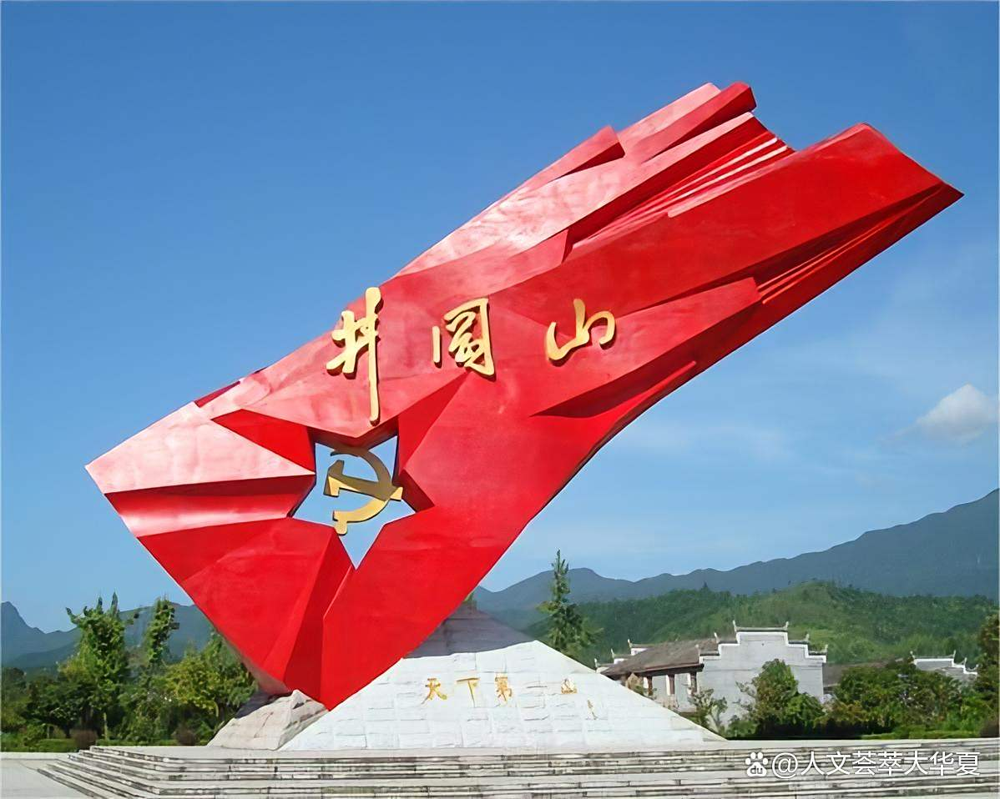
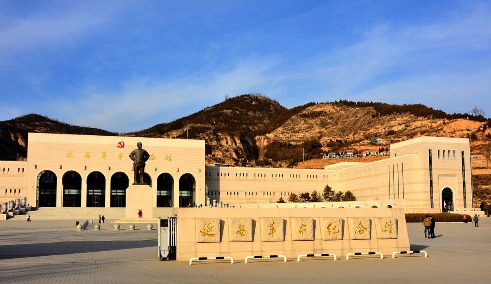
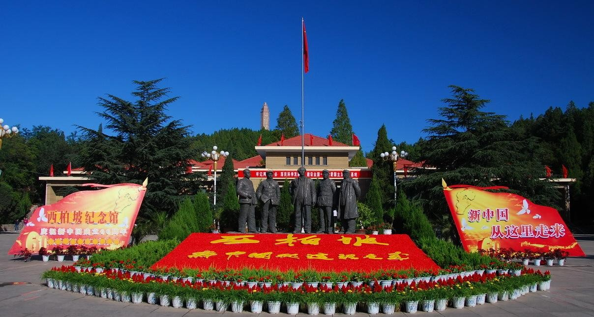
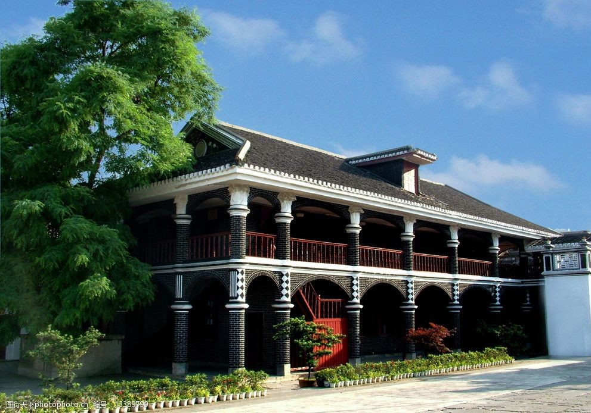
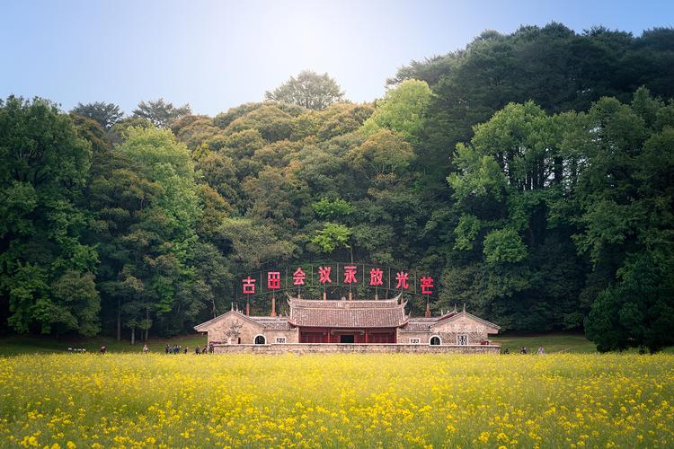
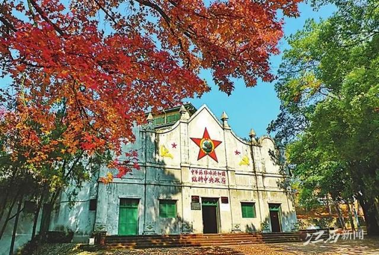

井冈山是中国革命的摇篮，1927年10月，毛泽东率领秋收起义部队抵达井冈山，创建了第一个农村革命根据地，开辟了农村包围城市、武装夺取政权的道路，孕育了伟大的井冈山精神。

延安是中国革命的圣地，从1935年到1948年，中共中央和毛泽东在这里领导、指挥了抗日战争和解放战争，奠定了新中国的基石，培育了光照千秋的延安精神。

西柏坡是新中国从这里走来的地方，1948年5月至1949年3月，中共中央在这里指挥了震惊中外的三大战役，召开了具有历史意义的七届二中全会，孕育了“两个务必”的西柏坡精神。

遵义会议是中国共产党历史上一个生死攸关的转折点，1935年1月召开的这次会议，确立了毛泽东在红军和党中央的领导地位，在极其危急的情况下挽救了党、挽救了红军、挽救了中国革命。

古田会议确立了思想建党、政治建军的原则，1929年12月召开的古田会议，解决了如何把以农民为主要成分的军队建设成为无产阶级领导的新型人民军队的问题，对我军建设产生了深远影响。

瑞金是共和国的摇篮，1931年11月，中华苏维埃第一次全国代表大会在这里召开，宣告中华苏维埃共和国临时中央政府成立，瑞金成为中央革命根据地的中心。